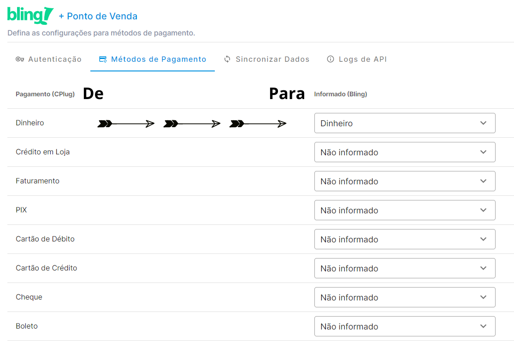

Dores BLING:
- Eles não possuem PDV (offline), por isso a integração com a ConnectPlug é algo muito interessante e importante.
- Bling emite NFC-e em alguns estados, MENOS EM SC. NFE e NFSE eles conseguem até em SC.
Solução CPLUG:
- Exportar produtos da Bling para a ConnectPlug. Importante lembrar que nesse processo, as categorias da CPLUG serão excluídas e substituídas pelas da Bling.
- Controle de estoque na Bling (quando a venda é realizada no PDV, há baixa no estoque da Bling). É preciso realizar uma configuração na BLING para que essa movimentação seja possível.
- Exportar o cadastro de clientes da Bling para a ConnectPlug.
- Venda com cliente selecionado: não é exportado o cliente relacionado a venda, todas vendas são geradas para "Consumidor Final Padrão".
- Cancelamento de Venda: quando é realizado o cancelamento de uma venda no ERP CPLUG essa venda precisa ser cancelada manualmente no ERP BLING.
- Vendedor: Na integração não é exportado o cadastro de vendedores e nas vendas com vendedor selecionado, a venda é enviada para Bling sem o vendedor.
- Imagens: As imagens do cadastro de produtos não é integrada, sendo necessário replicar manualmente a inserção de imagens descritivas.
- a Cplug puxa o Campo de Código de Barras da Bling, mas deve ser preenchido corretamente dentro do espaço bling, pois existem dois campo sendo SKU e Código de barras.
- Precisa do Módulo de Estoque em Grade, mas dentro da bling em variações de produtos é possivel cadastrar um SKU para cada variação, e dentro do nosso sistema é possivel apenas criar código de barras para estas variações e apenas 1 SKU para o produto pai.
SINCRONIZAÇÃO DE PRODUTOS: Nesta funcionalidade a sincronização segue com ORIGEM na BLING e sendo enviado para CPLUG os seguintes dados:
- Nome do Produto
- Atributos: Se utilizado, deverá ser obrigatório a contratação do módulo de GRADE DE PRODUTOS EM AMBAS PLATAFORMAS
- Parâmetros Tributários: Origem, NCM e CEST, os demais parâmetros tributários não são sincronizados e devem ser preenchidos manualmente
- Categoria: nesta sincronização serão eliminadas as categorias existentes na CPLUG e permanecerão apenas os dados oriundos da BLING
- Valor de Venda
- Código de Barras
SINCRONIZAÇÃO DE VENDAS: Já nesta modalidade a sincronização segue como ORIGEM as vendas originadas na CPLUG, são enviados os seguintes dados para BLING:
- Venda
- Vendedor: com a ressalva que serão enviados dados de vendedores que já foram sincronizados entre BLING-CPLUG
- Cliente: Se o CPF/CNPJ do cliente já existir na BLING, não será duplicado, será apenas vinculado ao cliente já existente
- Método de Pagamento
- Cancelamento de Vendas realizadas na CPLUG
SINCRONIZAÇÃO DE CADASTRO DE CLIENTES:
- Clientes cadastrados na BLING: Como a ideia da integração é possibilitar vendas em nosso PDV, os clientes de e-commerce da BLING não se fazem necessários em nosso ERP, dessa maneira nenhum cliente da BLING é sincronizado no ERP CPLUG.
- Clientes cadastrados na CPLUG: Somente clientes cadastrados na CPLUG são sincronizados para BLING, se o CPF/CNPJ do cliente já existir na BLING, não será duplicado, será apenas vinculado ao cliente já existente.
informações enviadas da Venda:
- Produtos (com variações e código de barras)
- Métodos de pagamento - precisa definir dentro da integração bling na cplug, para definir o "De > Para" das formas de pagamento, por exemplo, na Cplug o método de pagamento é "Dinheiro", e na Bling é entendido como "Dinheiro"

Extras
- Toda venda da CPlug, cai na bling como "Pedido de venda"
- É enviado para BLING apenas os Parametrôs fiscais de NCM e Origem, o restante fica na CPLUG.
- Se o LEAD tiver produtos com váriações de tamanho/cor na bling, ele precisa contratar o nosso módulo de Estoque em Grade Também.
- Cada variação de produto na bling, e entendido como um produto único
- Por enquanto NÃO é enviada da CPLUG para BLING a informação de QUAL LOJA fez X venda.
Limitações da Integração BLING
- Controle de Estoque apenas na BLING: O objetivo da integração é que as vendas realizadas em nossos PONTOS DE VENDA e sejam debitadas do estoque da BLING, por esta razão o estoque não é controlado na CPLUG.
- Métodos de Pagamentos: Na sincronização não é realizado o vínculo entre os métodos de pagamento de ambas as plataformas, sendo assim é obrigatório realizar um DE-PARA: vincular pagamentos CPLUG para pagamentos BLING.
- Venda com cliente selecionado: Não é exportado o cliente relacionado à venda, todas as vendas são geradas para "Consumidor Final Padrão".
- Cancelamento de Venda: Quando é realizado o cancelamento de uma venda no ERP CPLUG, essa venda precisa ser cancelada manualmente no ERP BLING.
- Parâmetros Tributários: A integração não exporta todos os parâmetros, atualmente é integrado apenas NCM e Origem Fiscal, demais parâmetros precisam ser inseridos manualmente.
- Vendedor: Na integração não é exportado o cadastro de vendedores e, nas vendas com vendedor selecionado, a venda é enviada para o Bling sem o vendedor.
- Imagens: As imagens do cadastro de produtos não são integradas, sendo necessário replicar manualmente a inserção de imagens descritivas.